3. Chapter 2 - Installing the [NestJS] Server
The [Kotlin] client described in this document requires a server to query: the [NestJS] server for the [RdvMedecins] application, included with this document in the [rdvmedecins-nestjs-server] folder. Since this document focuses on [Kotlin], that server is treated as a “black box”: this chapter explains how to install it, configure it, create its [MySQL] database, launch it, and test it, but does not examine its code. Readers who wish to learn about [NestJS] can refer to the document “Introduction to the TypeScript Language and the NestJS Framework” (2026).
This chapter is an exact replica of Chapter 2 from the course “An Example of a Client/Server Application—Flutter / NestJS (2026)”: the server, its database, and its tests are exactly the same. Readers who have already installed this server for the Flutter course can skip directly to the last section of this chapter, “Running the Kotlin Client for the First Time.”
3.1. Installing Laragon
To create the [MySQL] database used by the [NestJS] server, we’ll use the Laragon tool. As of September 2026, Laragon is available at URL [Download Laragon – Fast & Modern Dev Environment ]. Laragon includes tools that allow you to install a PHP server and the SGBD and [MySQL] servers:
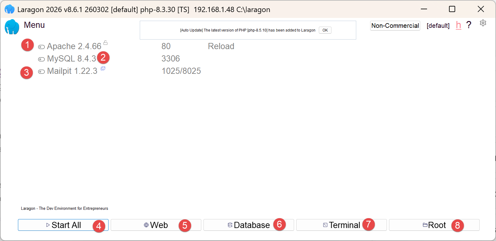
- in [1], an Apache web server;
- into [2], the SGBD and [MySQL];
- to [3], a messaging tool that we will not be using;
- [4] starts all services (Apache, [MySQL], MailPit);
- [5] displays the web page for URL [http://localhost]. By default, this URL refers to the <laragon-install>\www folder, where <laragon-install> is the Laragon installation folder;
- in [6], launches the HeidiSQL tool, which allows you to manage MySQL databases. We will use this tool to create the database used by the [RdvMedecins] server;
- In [7], open a terminal where all the binaries needed for Laragon are located in PATH;
- In [8], open Windows File Explorer to the folder associated with URL and [http://localhost];
The Laragon installation folder contains the following items:
 |
- In [1], the [bin] folder contains numerous applications:
 |
- In [1], the Apache web server;
- in [2], a command-line terminal;
- [3], a client ([git]) that allows you to manage different versions of a project;
- [4], a database manager;
- [5], a mail manager;
- [6], SGBD, and [MySQL];
- [7], another web server;
- in [8], [node.js] to run JavaScript scripts;
- [9], a text editor;
- [10], the PHP interpreter;
- [11], the [Python] interpreter;
- [12], a cache server;
Laragon comes with a comprehensive development environment. In this course, we will use only SGBD, [MySQL], [6], and the [heidisql] tool to manage it graphically;
3.2. Installation and Configuration of the [NestJS] Server
The [rdvmedecins-nestjs-server] folder has the following directory structure:
Each subfolder of [src/] contains its own [README.md] file, which summarizes the purpose of the files it contains. The source code for these files is not covered in this document.
In the [rdvmedecins-nestjs-server] folder, type the following commands in a terminal:
The [.env] file sets environment variables:
Customize the newly created [.env] file to match your [MySQL] installation (username, password, port). Since authentication was added, this file also contains a key named JWT_SECRET: the example value is suitable for following this document, but must be replaced with a random string unique to you before any actual use.
3.3. Creating the Database
The [dbrdvmedecins] database mirrors the structure of the original document (2014, Spring 4 / [MySQL] 5): same tables—[medecins], [clients], [creneaux], [rv]—same foreign keys, same uniqueness constraint. The only new addition, introduced by the “authentication” step of this port: the table [users]. The relationships between these tables are as follows: a doctor ([medecins]) has several time slots ([creneaux], foreign key [id_medecin]); an appointment ([rv]) links a day, a time slot (and thus a doctor), and a client ([clients]); the table [users] is independent of the other four: it is used solely for authentication.
3.3.1. [database/dbrdvmedecins.sql]
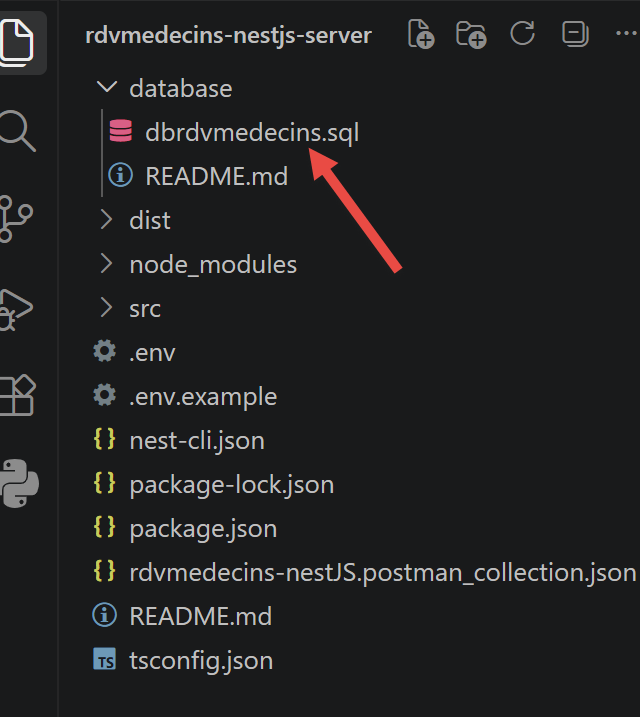
1 2 3 4 5 6 7 8 9 10 11 12 13 14 15 16 17 18 19 20 21 22 23 24 25 26 27 28 29 30 31 32 33 34 35 36 37 38 39 40 41 42 43 44 45 46 47 48 49 50 51 52 53 54 55 56 57 58 59 60 61 62 63 64 65 66 67 68 69 70 71 72 73 74 75 76 77 78 79 80 81 82 83 84 85 86 87 88 89 90 91 92 93 94 95 96 97 98 99 100 101 102 103 104 105 106 107 108 109 110 111 112 113 114 115 116 117 118 119 120 121 122 123 124 125 126 127 128 129 130 131 | |
Let’s break down this code:
- Lines 20–21: [CREATE DATABASE IF NOT EXISTS dbrdvmedecins …] followed by [USE dbrdvmedecins]—creates the database if it does not yet exist (character set [utf8mb4], which supports all Unicode characters, including accents), then selects it: all subsequent instructions apply to it. These two lines must absolutely come before EN and PREMIER: if executed after [DROP TABLE …], they would fail because no database is selected (error [No database selected]);
- Lines 24–28: [DROP TABLE IF EXISTS …] — the script starts from an empty database on each execution, in the reverse order of dependencies (starting with
rv, which references*[creneaux]andclients, down tousers, which is not referenced by anyone): [MySQL]* would refuse to drop a table that is still referenced by a foreign key; - Line 58: [id_medecin INT NOT NULL], then line 63: [CONSTRAINT fk_creneaux_medecin FOREIGN KEY …] — a time slot always belongs to a doctor;
- line 78: [CONSTRAINT unq1_rv UNIQUE (jour, id_creneau)] — the application’s central business rule: a single time slot on a given day can be booked only once. It is this constraint, and this constraint alone, that prevents a double booking—neither the validator nor the business logic layer explicitly rechecks it;
- lines 84–91: [CREATE TABLE users (…)] — the table added by this step.
loginis UNIQUE (two users cannot share the same login ID);passwordstores a password hashed using bcrypt (never in plaintext); role is either 'ADMIN' or 'USER'—a single text column, whereas the original document used three tables (users, roles, users_roles) to allow multiple roles per user. Since this application requires only two mutually exclusive roles, the original many-to-many relationship would have been more than necessary; - lines 129–131: [INSERT INTO users …] — two demo accounts, admin/admin (role ADMIN) and user/user (role USER), with their passwords already hashed using bcrypt (10 rounds of salting)—never in plaintext, including in this demo script.
3.3.2. Running the script with HeidiSQL
To create the [MySQL] database required by the [NestJS] server, we proceed as follows:
 |
- In [1], all services must be started;
- in [2], the [Database] option allows you to manage the database;
The option [Database] launches a utility called HeidiSQL:
 |
- In [1], you can select various SGBD options. The default value provided is SGBD MySQL. This is acceptable;
- in [2], you log in to HeidiSQL;
 | 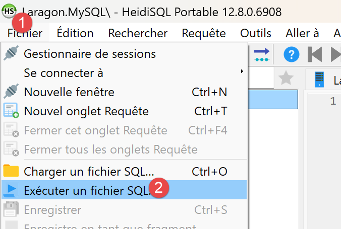 |
- In [1-2], run the SQL file, then select the [dbrdvmedecins.sql] file, which you’ll find in the [rdvmedecins-nestjs-server/database] folder:

Running the [3] file will create the [dbrdvmedecins] database used by the [NestJS] server. To view it, run F5 within HeidiSQL to refresh the display:

The database [dbrdvmedecins] has been created. You can view its contents:

- In [1-3], the table [clients];
- [id] is the primary key of the table;
- [version] is the row’s version number. This number increments each time the row is modified;
- [titre, nom, prenom] identifies the person;

- in [1-3], the table [medecins];
- [id] is the primary key of the table;
- [version] is the version number of the row;
- [titre, nom, prenom] identifies the person;
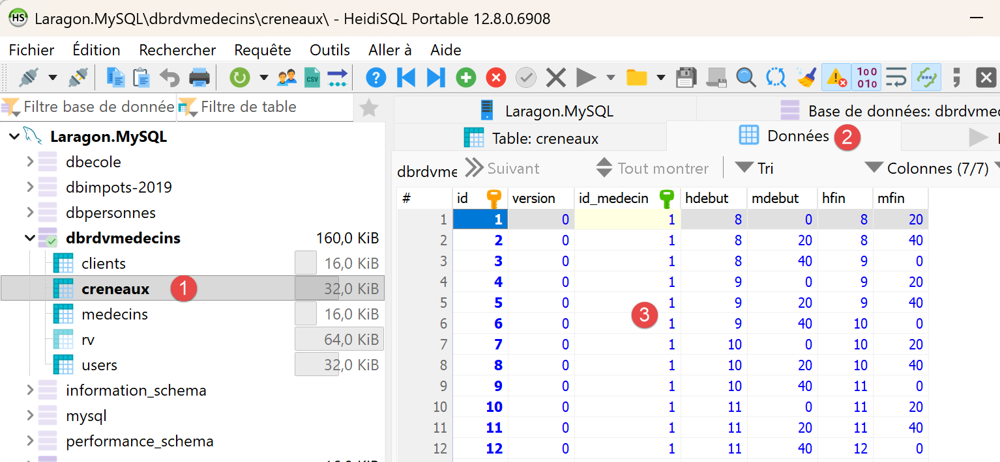
- In [1-3], the table of doctors’ appointment time slots:
- [id]: primary key;
- [version]: row version number;
- [id-medecin]: foreign key referencing the doctor’s primary key;
- [hdebut, mdebut]: hour and minutes of the appointment start time. Thus, [8,20] means 8:20 a.m.
- [hfin, mfin]: hour and minutes of the end of the consultation.

- In [1-3], the [rv] table of scheduled appointments;
- [id]: primary key;
- [version]: version number;
- [jour]: appointment date;
- [id_creneau]: foreign key referencing the primary key of the appointment time slot. Since a time slot is linked to a doctor, we know which doctor is handling this appointment;
- [id_client]: foreign key to the number (primary key) of the customer making the inquiry;

- in [1-3], the table [users], which lists the users authorized to use the application [NestJS];
- [id, version]: primary key, version number;
- [login, password]: user credentials;
- [nom]: user name;
- [role]: the user’s role. [ADMIN] has full access. [USER] has read-only access. This user can view a doctor’s schedule but cannot schedule or cancel an appointment;
3.4. Starting the [NestJS] server
Start all Laragon services ([Start All]), if you haven’t already. Then start the NestJS server in a VSCode terminal for the NestJS project:
The console displays, in order: the startup of the [NestJS] module, the list of routes exposed by the controller, and then confirmation of startup:
This console output confirms that the server is indeed listening on port 8080—exactly the same port as the Spring Boot server in the original document, which was deliberately chosen for this reason.
These routes constitute the API and JSON that the client [Kotlin] will consume in Chapter 4. [POST /login] is the only public route: it returns a token (JWT) that all other routes require in the header ([Authorization: Bearer <jeton>]). The read-only routes ([GET …]) are accessible to the roles ADMIN and USER; the two routes that modify data, [POST /ajouterRv] and [POST /supprimerRv], are reserved for the ADMIN role. Business responses are wrapped in a [{ status, data }] object, where [status] is set to 0 if the operation is successful.
3.5. Test the server with a browser
Since authentication was added, all routes under [RdvMedecinsController] require a valid JWT token; therefore, a browser alone can no longer be used to test them directly. For example:
now returns a 401 Unauthorized error without a token:

This is the expected behavior: this response confirms that the server is properly protecting its routes. Postman (next section) is required to obtain a token and then use it.
3.6. Testing the [NestJS] server with Postman
The Postman tool is available at URL [https://www.postman.com/downloads/]. You may need to create an account.
Start all Laragon services, then open the Postman desktop application:
 | 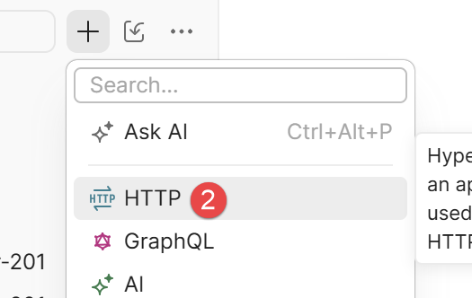 |
- In [1-2], create a request HTTP to query the doctors’ appointment management server;
3.6.1. Log in and obtain a token
- Create a new Postman request with the method POST, URLhttp://localhost:8080/login;
- In the [Body] tab, select "raw," then the JSON format, and enter: {"login": "admin", "password": "admin"} (or "user/user" to test the USER role);
- Submit the request.

- in [1-2], the request POST to the server [NestJS] running on port 8080;
- to [3-5], the body of the request. This transmits to the server the string JSON containing the credentials of the user attempting to log in, in this case admin/admin;
- in [6], the server’s response;
- in [7], the authentication token that subsequent requests must send to the server to indicate “I have already authenticated”;
Copy the value from accessToken: this is the token that must now be included in every subsequent request. In the example above, the token to copy is “eyJ...zoM” (without the quotes).
3.6.2. Call a protected route using the token
For GET /getAllMedecins (or any other route starting with RdvMedecinsController), in Postman, on the Authorization tab, select the Bearer Token type and paste the token copied above (Postman will then automatically add the Authorization: Bearer <token> header).

- in [1-2], the request sent to the server. It requests the list of doctors in the database;
- In [3-5], the request must send the authentication token. In [4], select [Bearer Token], and in [5], paste the authentication token you copied earlier;
- in [7], the server’s response;
3.6.3. Test the routes POST (/ajouterRv, /supprimerRv)
Follow the same procedure as above (method POST, body JSON, Bearer Token), exactly as the original document used the Chrome extension “Advanced Rest [Client]” for the same routes.
Note: You can find the following Postman requests in the [rdvmedecins-nestJS.postman_collection.json] collection:
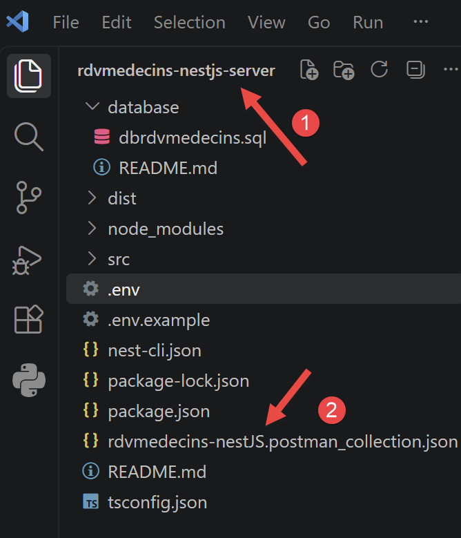
In Postman, press Ctrl-0 to load the collection:
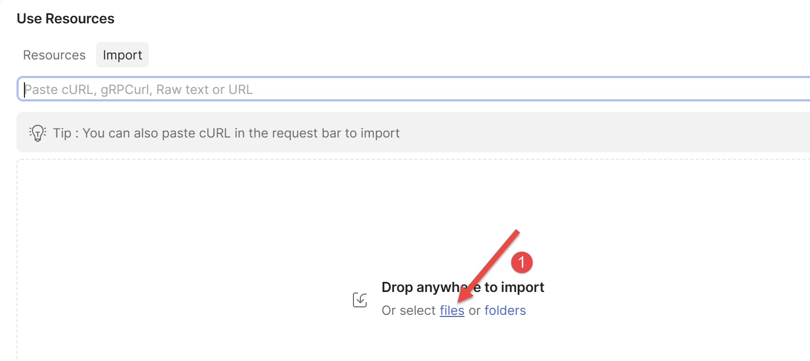
- Click on [1] to load the collection and select the collection file. Once the collection is loaded, it displays its requests:
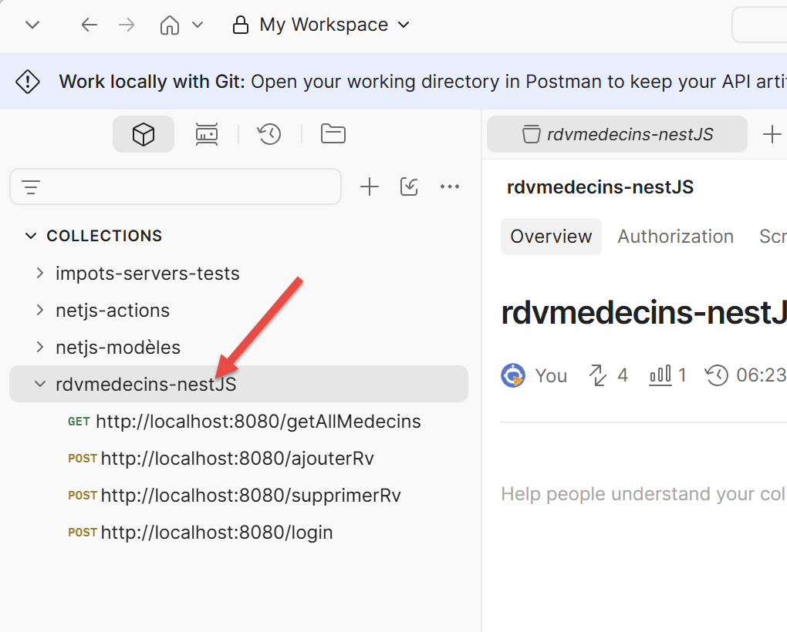
To test /ajouterRv with the token from an account ADMIN:
- Postman request, method POST, URLhttp://localhost:8080/ajouterRv;
- Authorization tab: Bearer Token, admin token;
- [Body] tab, raw, JSON: {"day": "2026-09-13", "idClient": 1, "idCreneau": 5};
- Submit the request.
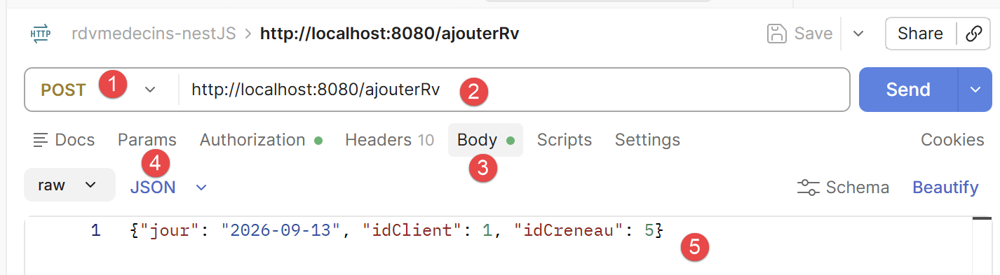
- as [3-5], the request body;

You can verify with HeidiSQL that an appointment has been added to the database:
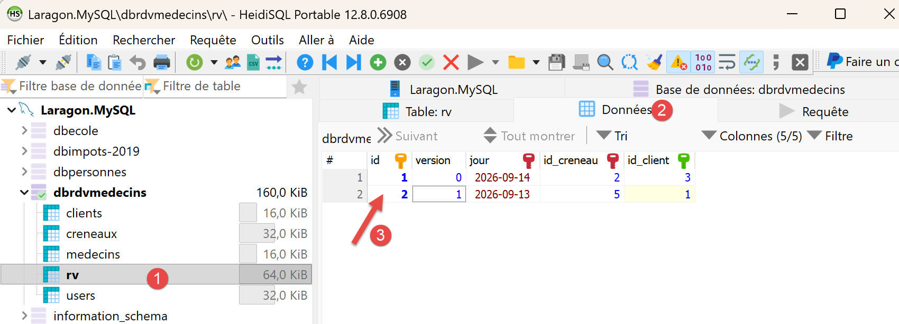
To test /supprimerRv, follow the same procedure with the body {"idRv": 2} (the ID of the appointment to be canceled (8) above).

- in [4], where the number above is the appointment to be deleted;
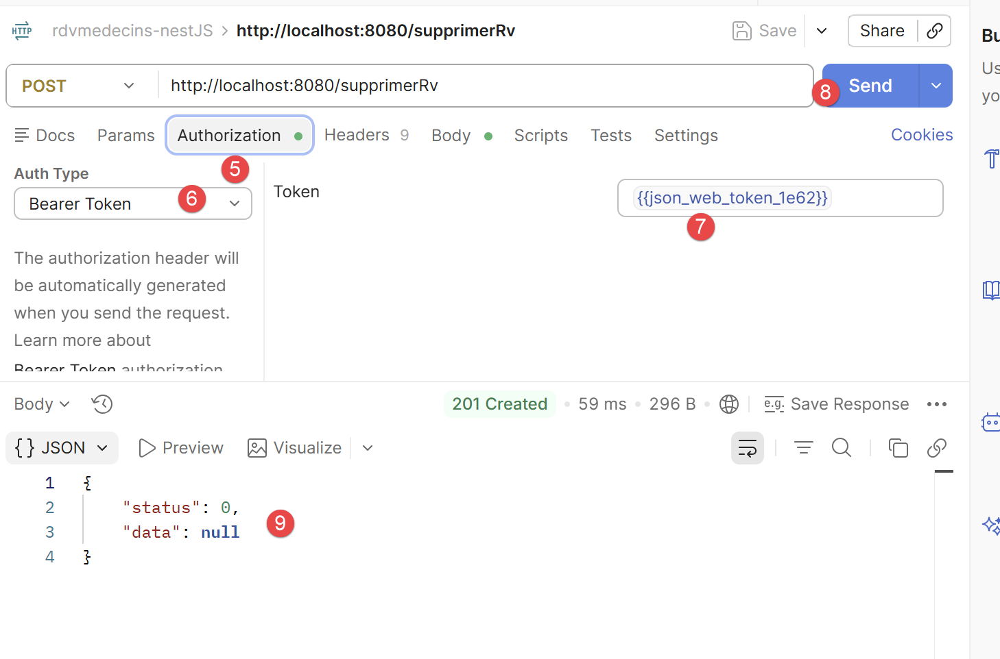
- to [5-7], the authentication token;
- to [9], the server’s response. [status=0] indicates that the operation was successful. You can verify this with HeidiSQL:
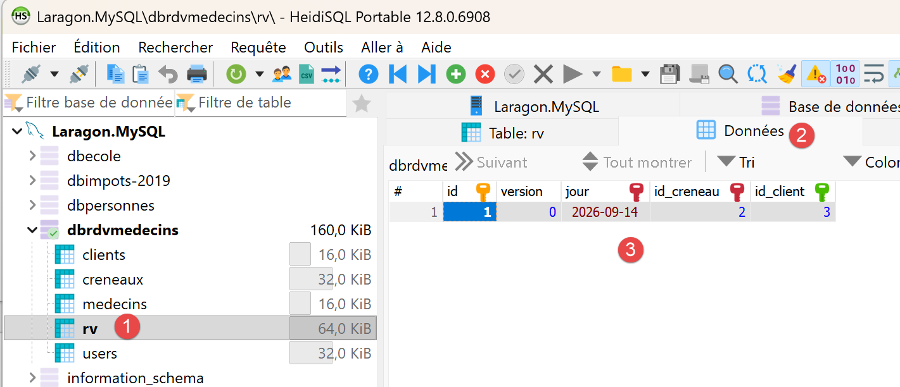
- in [3], appointment #2 no longer exists;
Try this: repeat the same request /ajouterRv using the token for the USER account (user/user) instead of the admin token: the response becomes 403 Forbidden, with the message “The role [USER] does not allow this action (required role: ADMIN)”—a concrete demonstration of the role-based access control implemented by the server.
3.7. Launch the Kotlin client for the first time
With the [NestJS] server running, open the [rdvmedecins-kotlin-client] project in Android Studio (see Chapter 1) and start the emulator. In the Android Studio toolbar, the device drop-down list should display the emulator (for example, [Pixel 8 API 37]); the [Run] button (the green triangle) next to it compiles the app, installs it on the emulator, and launches it.
Without Android Studio, the same steps can be performed from the command line: the Gradle task [installDebug] compiles and installs the app, and then [adb] launches it:
- [installDebug]: builds the app (like [assembleDebug]; see Chapter 1), then installs it on the connected device—emulator or phone;
- [adb shell am start -n <application>/<activité>]: instructs the Android Activity Manager ([am], Activity Manager) to launch the [MainActivity] activity of the [fr.rdvmedecins.client] app—which is what the system does when you tap the app icon.

The login screen appears first, just as it did for previous students in this course: two demo accounts are provided with the server database, [admin]/[admin] (role [ADMIN], full access) and [user]/[user] (role [USER], read-only). The “FR”/“EN” buttons in the upper-right corner switch the interface to English, even before logging in.
The “Server URL” field contains [http://10.0.2.2:8080] by default: in the emulator, the special address [10.0.2.2] refers to the computer running the emulator, i.e., the server [NestJS]. If the connection fails after about ten seconds (message: “Incorrect login or password. ”), it is most often because this address is not responding: this happened on the computer used to write this document. The solution is described in Chapter 5: the command [adb reverse tcp:8080 tcp:8080], followed by URL and [http://localhost:8080].